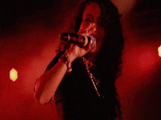
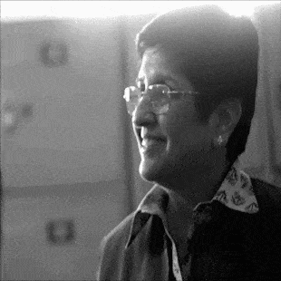
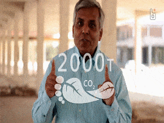
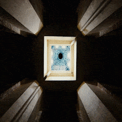
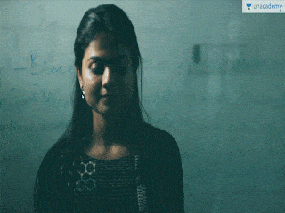
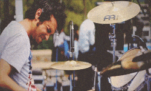

Pulse is the largest festival attended by doctors in India. It is hosted at A.I.I.M.S., New Delhi and lasts for 7 days. Artist lineup included Farhan Akhtar Live, Euphoria, Neha Kakkar, TVF Live, Wadali Brothers, Sunburn Campus.

AIIMS Pulse 2015 Festival Aftermovie
Festival Aftermovie
AIIMS Pulse 2015 Festival Aftermovie
Pulse is the largest festival attended by doctors in India. It is hosted at A.I.I.M.S., New Delhi and lasts for 7 days. Artist lineup included Farhan Akhtar Live, Euphoria, Neha Kakkar, TVF Live, Wadali Brothers, Sunburn Campus.

Through the doors of Navjyoti Foundation with Kiran Bedi Ma'am
Short Film
Through the doors of Navjyoti Foundation with Kiran Bedi Ma'am and Unacademy
The underprivileged kids of Navjyoti India Foundation (of Dr. Kiran Bedi) were introduced to digital learning by the folks at Unacademy.

Annakshetra Foundation
Documentary
Annakshetra Foundation
This is a documentary style video made for a cause we truly believe in - minimising food wastage. The Annakshetra Foundation, started in Jaipur collects surplus food and redistributes it among individuals who are contributing in the national development.

IIT Kanpur Techkriti 2016
Festival Aftermovie
IIT Kanpur Techkriti 2016 - Festival Aftermovie
Techkriti is the technical festival of IIT Kanpur. It is the largest tech-festival in India.

Roman Saini in Conversation with IAS 2016 Toppers: Artika Shukla, Shashank Tripathi, Gazal Bhardwaj
Talk Show
Roman Saini in Conversation with IAS 2016 Toppers: Artika Shukla, Shashank Tripathi, Gazal Bhardwaj
Civil Services Examination is one of the hardest exams in India. Every year close to a million people fill this form, hardly a thousand of them get selected.
In this video, the toppers talk about their life journey, their motivation and their preparation strategy.

Le Fiestus 2014 - Cultural Fest Aftermovie
Festival Aftermovie
Le Fiestus 2014 - Cultural Fest Aftermovie
Decription: Feastival aftermovie for Le Fiestus 2014. It is the annual cultural festival of Jaypee University of Information Technology. Set in the predestine Himalayas, this university is blessed with one of the most beautiful campuses in the country.